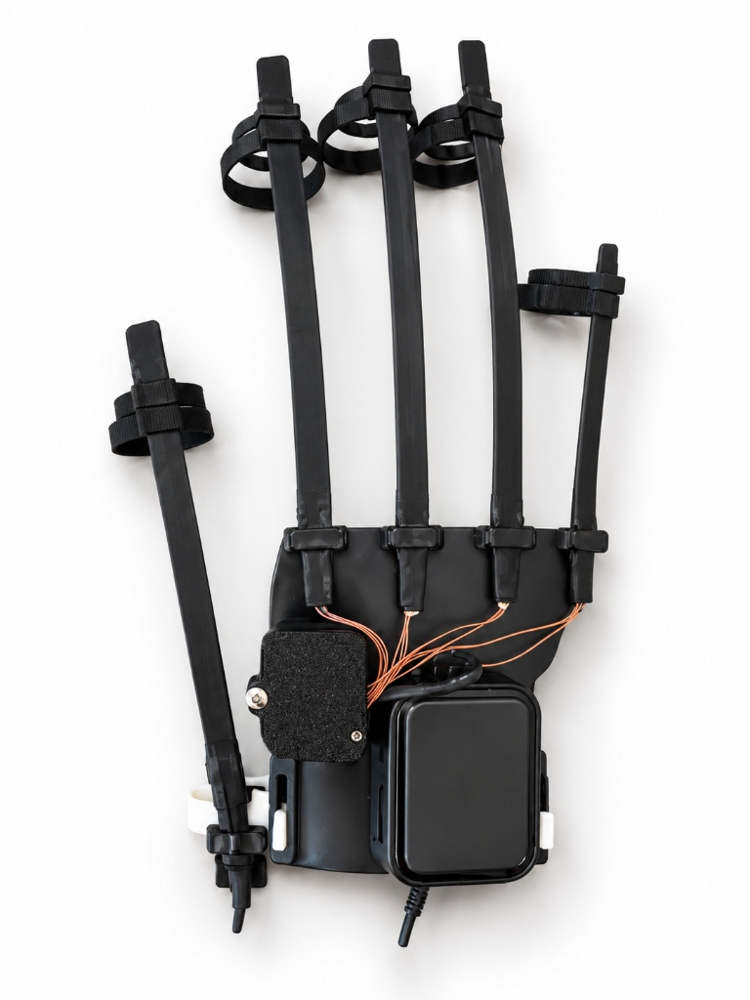
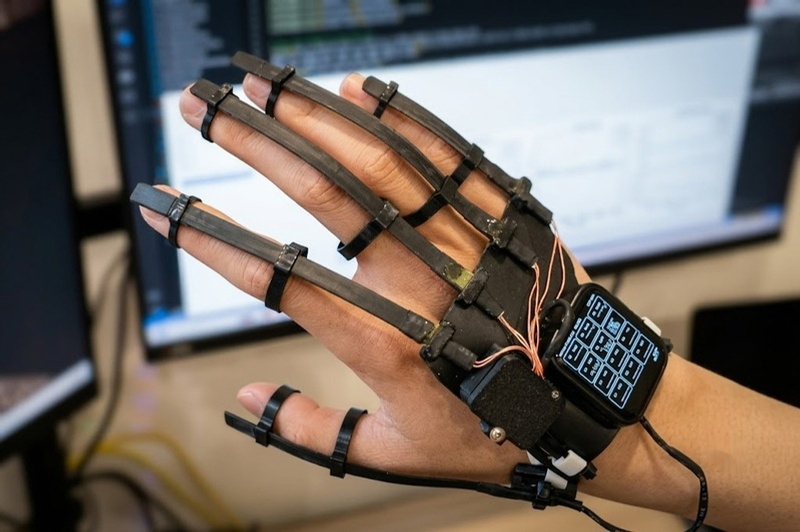
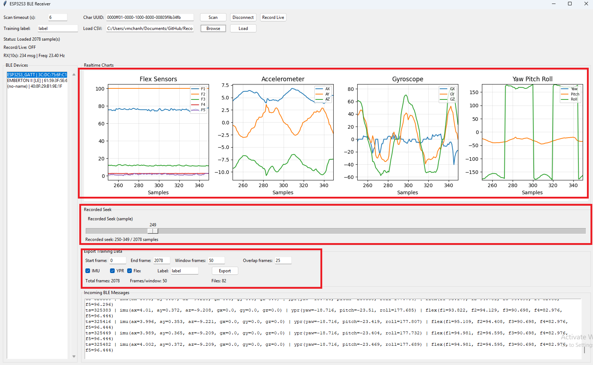
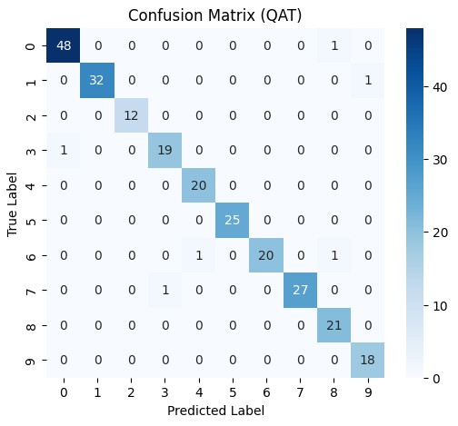
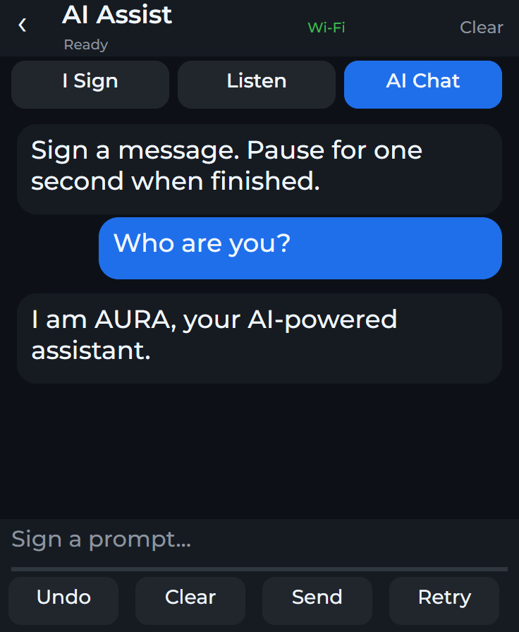
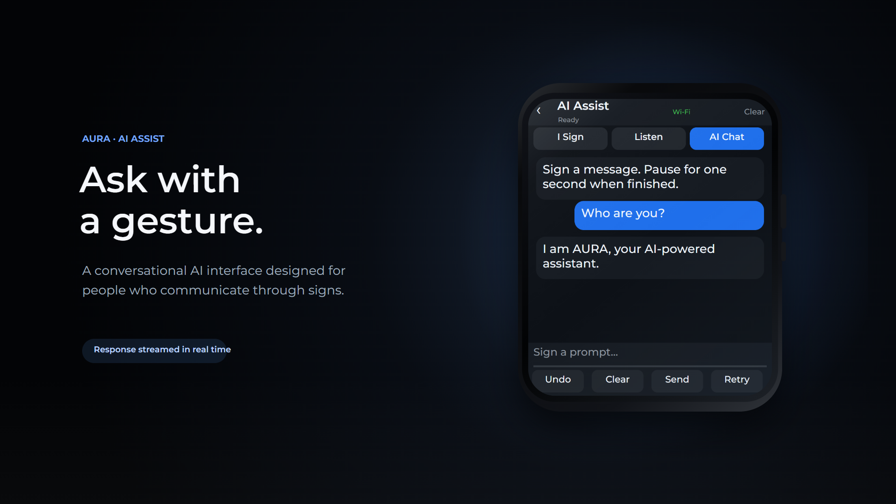

Over 70 million deaf individuals worldwide remain isolated in everyday communication. A.U.R.A. is an intelligent bionic glove engineered with On-Device TinyML. It translates sign gestures into discrete spoken words via an onboard speaker and interprets ambient speech into real-time visual sign cues on the wrist display — 100% autonomous, private, and camera-free.

Eliminating external cameras and restrictive lighting conditions. AURA translates hand kinematics into clear acoustic words while simultaneously transcribing surrounding conversation into visual signs on the wrist AMOLED.
Quantized lightweight neural network executes locally on-device. Translates discrete sign gestures into discrete spoken words in <15ms without cloud dependencies.
Integrated audio system delivers clear spoken pronunciation through an ergonomic wrist-mounted micro-speaker.
Pure biomechanical resistive sensing functions flawlessly in pitch darkness, rain, and crowded public venues without invasive video capture.
Experience discrete gesture vocalization, reverse ambient speech transcription, and intelligent conversational AI Chat with Gemini.
Simulated 1.9" Retina AMOLED (368 × 448 px)
AMOLED Wrist Interpretation Screen • Reverse Flow
AMOLED Gemini AI Assistant Interface
Engineered at HCMUT: Dual-Core embedded computing, 5-finger flex sensor arrays, and biocompatible phalange fabrication.
Continuous data transformation bridging the barrier between the deaf and hearing worlds.
5 flex sensors & 6-axis motion sensor stream continuous angle and velocity vectors with real-time filtering.
Embedded processor evaluates sensor data locally to identify discrete hand signs in <15ms.
Outputs corresponding spoken words through the onboard speaker with zero cloud delay.
Microphone captures surrounding conversation with noise filtering.
Spoken voice is transcribed and mapped to recognizable sign language tokens.
Wrist AMOLED screen renders sign animations and subtitles for deaf users to read instantly.
Rigorous engineering comparison highlighting AURA's decisive advantages over camera-based AI and generic DIY Arduino gloves.
| Evaluation Parameter | AURA Smart Glove | Camera Vision (MediaPipe) | Generic DIY Glove |
|---|---|---|---|
| Bidirectional Communication | Full-Duplex (Two-Way) | One-Way Only (Sign ⟶ Text) | Primitive One-Way |
| Night / Dark Operability | 100% Light-Independent (Sensors) | Fails completely in low light | Operable |
| Inference Latency | < 15 ms (On-Device Inference) | 120 - 350 ms (Camera bottleneck) | 50 - 100 ms |
| Privacy & Public Discretion | 100% Private (No Cameras) | Invasive video recording | No camera |
Authentic circuit schematics, TinyML pipeline flowcharts, and fabrication photos from laboratory research.




